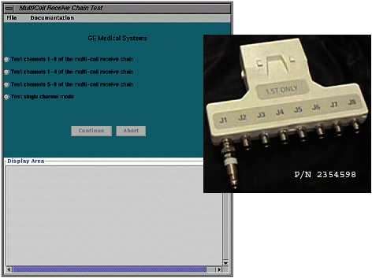

Proprietary to General Electric Company
Direction 5440000, Rev# 5
Signa HDxt Service Methods
Module Version 1.0, Version Date 5/15/07
Proprietary to General Electric Company |
Illustration 1: MULTICOIL RECEIVE CHAIN TOOL GUI AND HARDWARE

The MultiCoil Receive Chain Tool (P/N 2354598) provides a means of diagnosing problems in MultiCoil Receive (MCR) chain hardware, independent of any phased array coil. The tool sends the receive signal from the Head Coil down the individual paths to isolate specific channels in the receive chain.
The tool’s Graphical User Interface (GUI) guides the user through the various steps involved in running the tool and troubleshooting the problem. The GUI has built-in instructions and detailed setup instructions, troubleshooting flowcharts and documents that will help facilitate rapid diagnosis of the problem. Copies of the block diagrams and troubleshooting flowcharts can also be found in Appendix B of this document.
The tool is operable in the following modes:
Test channels 1-8 of the MultCoil Receive Chain (for 8-channel receive systems only)
“Test channels 1-8…” is the recommended test to begin with for identifying problems. Once the problem is narrowed down, choose from one of the appropriate selections that are listed below.
Test channels 1-4 of the MultiCoil Receive Chain (for 4-channel receive systems only)
Test channels 5-8 of the MultiCoil Receive Chain (for 4-channel receive systems only)
Test single channel mode (for all system types)
The GUI also includes a Functional Check of the Head Receive Line. This will aid in determining the Head Receive Line at the Head Quick Disconnect Box, which is necessary for performing tests on the MultiCoil Receive Chain. The steps required to perform the functional check are in Appendix A- Functional Test of Head Receive Line.